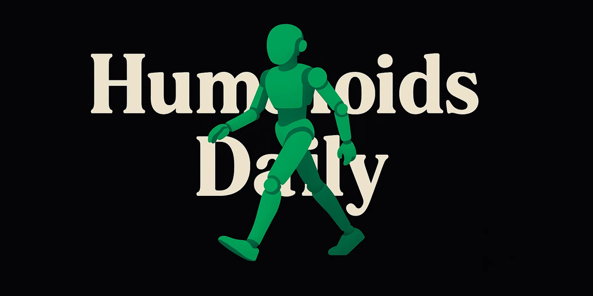

Alejandro Escontrela
AI Researcher
Hi! I’m Alejandro! I’m a Senior Research Scientist at Google DeepMind, working on World Models for Robotics. I completed my PhD at Berkeley AI Research advised by Pieter Abbeel.
I am broadly interested in reinforcement learning, unsupervised learning, and robotics. Specifically, my work focuses on extracting behavior priors for RL agents from internet data, making RL super sample efficient, and leveraging large generative models as priors. My PhD work was supported by the NSF and the UC Berkeley Chancellor’s Fellowship. Before that, I completed my undergrad at Georgia Tech, advised by Frank Dellaert. I was also a Research Intern at Google Brain from 2018-2022, at DeepMind in 2024, and at Amazon Frontier AI & Robotics (FAR) from 2025-2026.
Contact: mail AT escontrela.me
news
| Feb 9, 2026 | I started as a Research Scientist on the Google DeepMind Robotics team, working with Jie Tan! |
|---|---|
| Dec 2, 2025 | We released Holosoma! Our full-featured robot learning library developed at Amazon-FAR. With support for tons of robots, simulator backends, terrains, and tasks ( | Code ) |
| Oct 21, 2025 | GaussGym is now open source! Website | | Code | Paper |
| Aug 18, 2025 | I joined Amazon Frontier AI & Robotics (FAR) as a Research Scientist Intern with Rocky Duan! |
| Jul 13, 2024 | Score matching RL will be presented at the International Conference on Maching Learning in Vienna (website , code ) |
| Jun 24, 2024 | I’m interning at DeepMind with Thomas Kipf! |
| Sep 22, 2023 | VIPER 🐍 was accepted to NeurIPS in New Orleans! (website , X , code , paper ) |
| Aug 14, 2023 | Some of my work was featured in the latest BBC One Panorama documentary . Check out “Beyond Human: Artificial Intelligence and Us”! |
| May 24, 2023 | We released Video Prediction Rewards (VIPER 🐍). Check out our website , Twitter , code , and the paper |
| Dec 14, 2022 | I’m co-organizing the Learning for Agile Robotics workshop at CoRL 2022. Recordings are live on the site! |
featured media



selected publications
-
 International Conference on Maching Learning 2024
International Conference on Maching Learning 2024 -
 Neural Information Processing Systems 2023
Neural Information Processing Systems 2023 -
 International Conference on Intelligent Robots and Systems 2024
International Conference on Intelligent Robots and Systems 2024 -
 International Conference on Intelligent Robots and Systems 2022Best Paper Award finalist,
International Conference on Intelligent Robots and Systems 2022Best Paper Award finalist,(0.6%)
-
 Proceedings of Machine Learning Research 2022
Proceedings of Machine Learning Research 2022 -
 Proceedings of Machine Learning Research 2021
Proceedings of Machine Learning Research 2021 -
 Robotics Proceedings 2022Best Systems Paper Award,
Robotics Proceedings 2022Best Systems Paper Award,(1.6%)